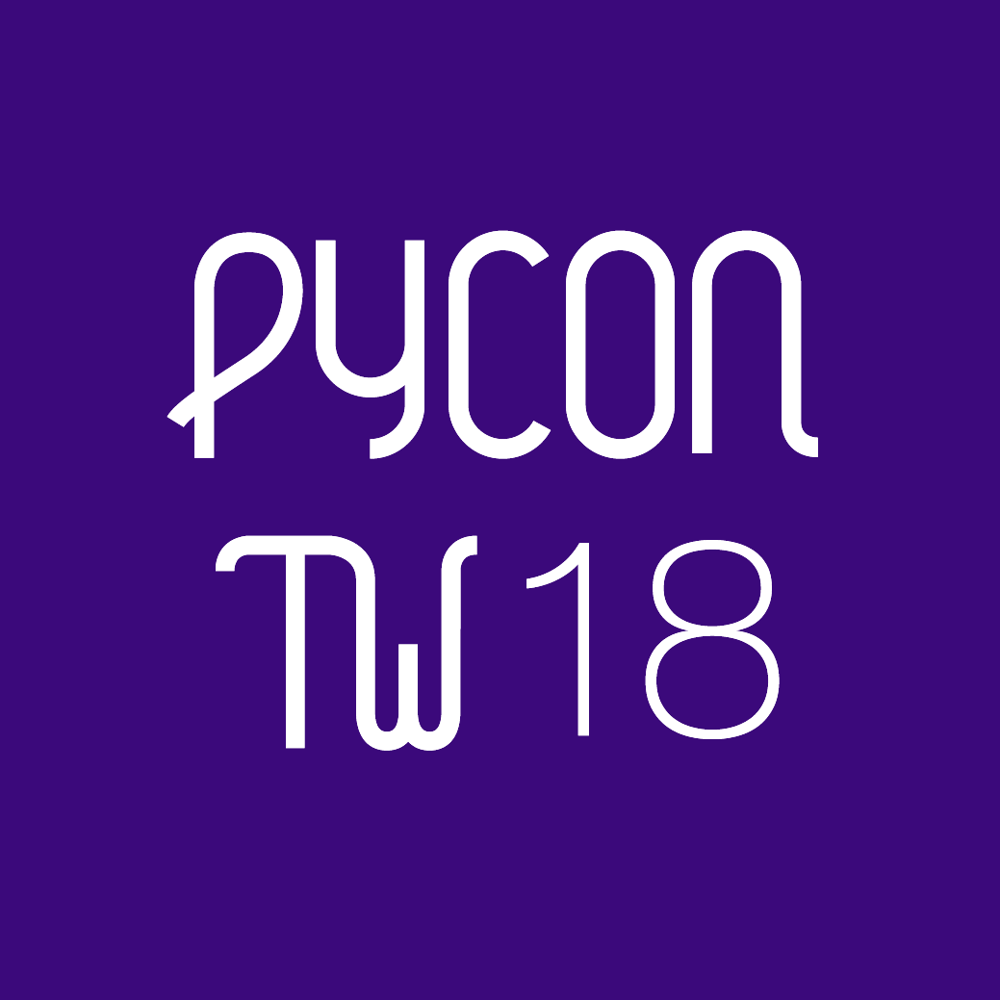

Hello World
CodeTengu Weekly 碼天狗週刊
如果命運的齒輪沒有出差錯，CodeTengu Weekly 都會在 UTC+8 時區的每個禮拜一 AM 10:00 出刊。每週會由三位 curator 負責當期的內容，每個 curator 有各自擅長的領域，如果你在這一期沒有看到感興趣的東西，可能下一期就有了。當然你也可以瀏覽一下前幾期的內容。
目前的 curator 陣容：
- @vinta - I failed the Turing Test - 科幻迷，但是最近在玩 God of War
- @saiday - Imnotyourson - 電量給我這種人用就是一種浪費
- @tzangms - Oceanic / 人生海海 - 最近真的都在玩薩爾達
- @fukuball - ImFukuball - 有新工作了，但歡迎直接挖角
- @mingderwang - Ethereum enthusiast
- @kako0507 - 熱愛嘗試新事物的前端工程師
- @chiahsien - 我們又要找 iOS 工程師啦！
- @uranusjr - Smaller Things - PyCon Taiwan 熱烈售票中。Shadowverse: uranusjr
- @kkdai - 態度萬歲 - Learning Deeply....
- @yhsiang
- @johnlinvc - 挑戰自動化家中電器
- @drumrick - 歡迎加入台灣 Kaggle 交流區
- @wancw
- @allanlei
你也可以關注我們的 Facebook、Twitter、GitHub 或 Open Source 專案，有很多 weekly 看不到的內容。有任何建議也歡迎來 Gitter 聊聊。
 @vinta
@vinta
Apex and Terraform: The easiest way to manage AWS Lambda functions
因為一直都有訂閱 RSS 的習慣，但是常常工作一忙就積了一堆文章忘記看，可是又發現自己就算上班事情很多還是會三不五時刷一下 Twitter 順便抱怨幾句，所以就乾脆建了一個 @vinta_rss_bot，透過 Zapier 同步 Feedly 裡的文章到 Twitter，讓自己在刷推的時候很容易不小心就看到。實測了一個多禮拜，效果不錯，大家可以試試。
雖然這個 RSS bot 用了 Zapier 才花五分鐘就搞定了，連一行 code 都不用寫，但是因為不是每個人都是「空格之神」的信徒，一看到 @vinta_rss_bot 推了幾則沒有在標題的中英文之間加上空格的文章之後，開始覺得渾身不舒服。最後實在受不了，就用 AWS Lambda 寫了一個加空格的 web API - api.pangu.space，讓 Zapier 在輸出到 Twitter 之前先打一次。
（前情提要有點太長）
這篇文章就是紀錄我當初用 Apex 和 Terraform 部署 AWS Lambda functions 的過程，主要的邏輯很簡單，是用 Go 寫的，比較麻煩的反而是在配置 Amazon API Gateway 和 custom domain 的 HTTPS 之類的。因為只是個 side project，所以就沒用太重量級的 Serverless 了。
延伸閱讀：
cert-manager: Automatically provision TLS certificates in Kubernetes
目前公司的 Kubernetes cluster 是用 kube-lego 自動從 Let's Encrypt 取得 TLS/SSL 憑證，但是因為 kube-lego 之前宣佈只支援到 Kubernetes v1.8 為止，所以希望大家改用另外一套由同一群人開發的在做同一件事的工具：cert-manager。
這篇文章就是紀錄我當初部署 cert-manager 的過程，準備之後從 kube-lego 遷移過去。不過因為當時測試的時候發現 cert-manager 有些功能還不是很完善，例如 ingress-shim，再加上我們在 Kubernetes v1.9.6 用 kube-lego 其實也沒遇到什麼問題，所以後來的結論是暫時先不遷移。不過文章寫都寫了，還是跟大家分享一下，希望對其他人有幫助。
延伸閱讀：
GCP products described in 4 words or less
之前都是用 AWS 比較多，但是現在公司是用 Google Cloud Platform，這篇文章可以讓你快速了解 GCP 上面有哪些東西可以用。
忍不住抱怨一下，Google Cloud Memorystore 到底什麼時候才要上線呢？
雖然 GCP 在各方面都還是差了 AWS 一截（Google Kubernetes Engine 除外），但是 Google Cloud 的 Stackdriver 系列真心好用，例如 Logging 可以直接全文搜尋所有 containers 的 stdout，什麼配置都不用（轉頭望向 ELK）。說到看 logs，kubetail 也是不錯，就是強化版的 kubectl logs -f；另外還有 Debugger 可以直接在 production code 上跑 debugger，實在炫炮。
延伸閱讀：
One Giant Leap For SQL: MySQL 8.0 Released
MySQL 8.0 前陣子發佈了，這個版本對 SQL 標準的支援有了長足的進步，終於從 SQL-92 的魔障中走出來了。有望擺脫 Friends don't let friends use MySQL 的罵名（目前看來會繼承這個污名的應該是 MongoDB）。
是說因為以前一直都在用 MySQL，根本不知道 Window functions 是什麼，第一次用 OVER (PARTITION BY ... ORDER BY ...) 反而是在 Apache Spark 裡啊（SQL 俗）。
延伸閱讀：
Redis in Action
上禮拜花了一點時間研究 Redis 的 RDB/AOF persistence 和 Master/Slave replication 的原理，發現除了官方文件之外，Redis in Action 這本書寫得也非常詳細（雖然有些內容可能有點舊了），但是畢竟是經過 Redis 作者本人背書的，值得一讀。
忍不住分享一下，我上禮拜仔細看了 Redis 4.0 的 redis.conf 之後，才發現現在多了一個 aof-use-rdb-preamble 設定，實測啟用之後可以讓 appendonly.aof 的檔案大小減少 50%，大家有空可以試試。
延伸閱讀：
金丝雀发布、滚动发布、蓝绿发布到底有什么差别？关键点是什么？
看了這篇文章我才終於知道 Canary Releases, Blue-green Deployment, Rolling Update 是什麼意思（汗顏）。
 @fukuball
@fukuball
Muzeum 白皮書
Blockchain Application：初級
這幾個月開發的 Muzeum Protocol 終於要公開發表了（4/24 技術發佈會），我個人最欣賞這個 Protocol 的一點就是授權標準化、區塊鏈化，雖然我們是以音樂為例來架構一個授權應用在 Muzeum 上，但其實任何智慧資產、無形資產都可能可以透過相同的模式架構應用程式在 Muzeum 上。
音樂授權標準化、區塊鏈化有什麼好處？
我們先想像一個情境：當您的創作、電影、遊戲、音樂 Remix 需要其他音樂輔助的時候，要怎麼做呢？首先您需要找到授權人在哪裡，找到之後與授權人談條件，來來回回的合約簽章，最快您可能三個月後可以得到授權。
有些不肖人士可能就想跳過授權直接盜版了，這其實會影響到創作人的收益。
透過 Muzeum Protocol，您可以快速的找到授權位址、知道授權範圍、與授權人快速達成協議，並且直接將授權的收益直接回饋給音樂的授權人，最快可能在幾天甚至幾小時內得到授權並將授權憑證記錄在區塊鏈上，方便到讓人沒有理由說得到授權太慢、太麻煩了。如果說串流音樂的方便性改變了人們聽音樂的方式，Muzeum Protocol 授權標準化的方便性也可能帶給音樂授權生態一個巨大改變。
Muzeum Protocol 雖然由我們提出一個初步的版本，但一切都是希望公開讓大家可以加入修改制定，畢竟這個 Protocol 最終目的是幫助創作人，需要大家一起參與才能更加完善。
未來您有了新的創作，就可以發佈到 Muzuem Protocol，加入標準授權，將授權的憑證記錄在區塊鏈上，保障創作的授權使用得到收益，需要得到授權的人也能快速得到授權，延伸出更美好的創作甚至是商業應用，帶來雙贏的局面！
Turning a MacBook into a Touchscreen with $1 of Hardware
Machine Learning：高級
怎麼讓 Macbook 的螢幕變成觸控螢幕呢？本篇文章作者示範了只花 1 美元就可以將 Macbook 升級成觸控螢幕！原理就是利用鏡子跟影像辨識！個人覺得很有趣啊！大家如果也想動手自己玩玩看的話，作者也有把程式碼開源在 GitHub 喔！
Hallucinogenic Deep Reinforcement Learning Using Python and Keras
Machine Learning：高級
今年三月 Google Brain 發表了 World Model 這個有關 Reinforcement Learning 方法的論文，我是有看沒有懂，大體的概念是 Machine Learning Model 可以在夢中自我學習嗎？有這樣的想法是來自於人類的思考方式，人類在學習一項技能的過程中也會有在腦中模擬真實環境藉以自我學習的方式，這個 World Model 就是要賦予 Machine 這種能力。
概念上模型可分為視覺模型、記憶模型及控制器模型，視覺模型訓練以最小化輸入圖像與輸出壓縮圖像的差距，即是讓 Machine 具有圖像識別能力。記憶模型則是以壓縮圖像以及所採取的行為作為輸入，訓練 Machine 對未來的判斷。控制器模型則用以訓練 Machine 對未來所採取的行動，是否會讓遊戲可以繼續或是 Game Over。
有了記憶模型及控制器模型，基本上 Machine 可以自己建立虛擬環境形成自己的 Play Ground，並讓自己在這個 Play Ground 中繼續學習，這也就是 World Model 中所謂的在「夢中」學習。說實話，這有點像漫畫醫龍裡面的朝田龍太郎在腦中模擬動手術那樣啊！蠻酷的！
本篇文章也有帶大家一步一步訓練、運行 World Model，大家有時間不仿自己跑看看喔！
工商服務

PyCon Taiwan 2018 熱烈售票中！
PyCon Taiwan 為一年一度由愛好者舉辦、討論並提倡使用 Python 程式語言的會議，聚焦在 Python 技術與其多樣的可能應用的交流。我們歡迎所有對 Python 有興趣的朋友一同加入 PyCon Taiwan 來分享所學、交換想法、並且認識更多同好。
工作機會
Senior Backend Developer at Swag
薪資：年薪新台幣 100 萬元以上。
基本條件：
- In-depth knowledge of Python or Node.js
- Experience with Python web frameworks, ie. Flask/Django/Tornado
- Utilized work queues for background processing
- In-depth knowledge of MongoDB, Redis, and Kubernetes
- Excellent understanding of HTTP
- Experience developing REST APIs
Random Cool Stuff
Otaku is the New Sexy
Monty Python's Flying Circus on Netflix
各位觀眾，Netflix 上有 Monty Python's Flying Circus 了！不知道 Monty Python 是誰的，我們在 Issue 6 有介紹過！
由 @vinta 分享！